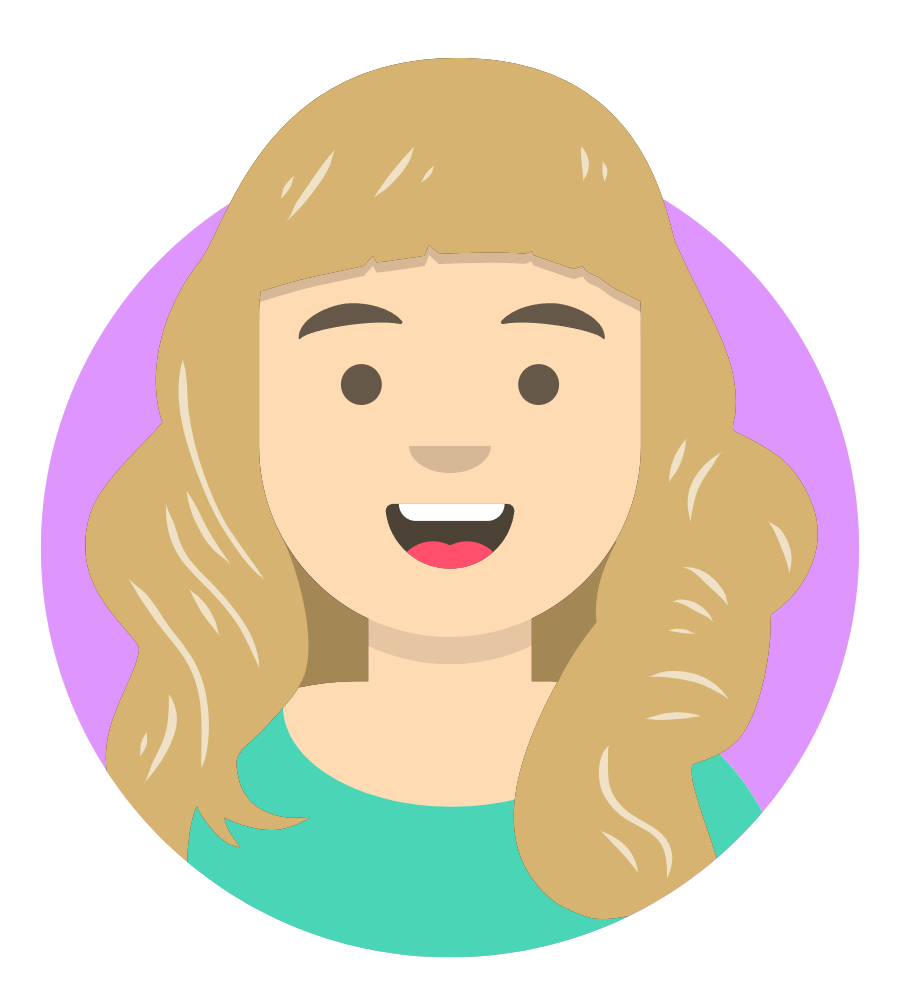

Over de opleiding

de blokken
Je hebt 7 blokken. Het eerste jaar is blok A en B je gaat dan gewoon de hele tijd naar school. In blok A begin je met de microbit als introductie en wat html en css later in het blok krijg je ook python. In blok B ga je verder met html en css en leer je sql, php en een kleinbeetje js. Je gaat ook c# leren. het tweede jaar is blok C en D. In blok c ga je gewoon verder met wat je in blok B leert en laravel leren, je gaat ook voorbereiden op stage. In blok D ga je dan stage doen je gaat 1 dag per week wel naar school voor wat vakken. Jaar 3 is blok E en F. in blok E ga je verder met leren en F krijg je je examens. dan heb je je laatse jaar het 4de met blok G dat is stage examen dus je doet dan 1 heel schooljaar stage. als je een blok niet haalt kan je dat blok gelijk opnieuw doen inplaats van het hele leerjaar.
Versnellen
In blok A als je goed je werk doet en de leraren merken dat het wel makkelijk voor je gaat kan het zijn dat ze aan je vragen of je wilt versnellen. als je gaat versnellen heb je inplaats van 4 jaar 3 jaar blok G en F worden dan omgedraaid en blok E word weggehaald omdat je al meer leert in de andere blokken. G duurt inplaats van 1 jaar een halfjaar dus G en F zitten in 1 jaar.
Vakken
docenten
henk

pieter

meisje
jan